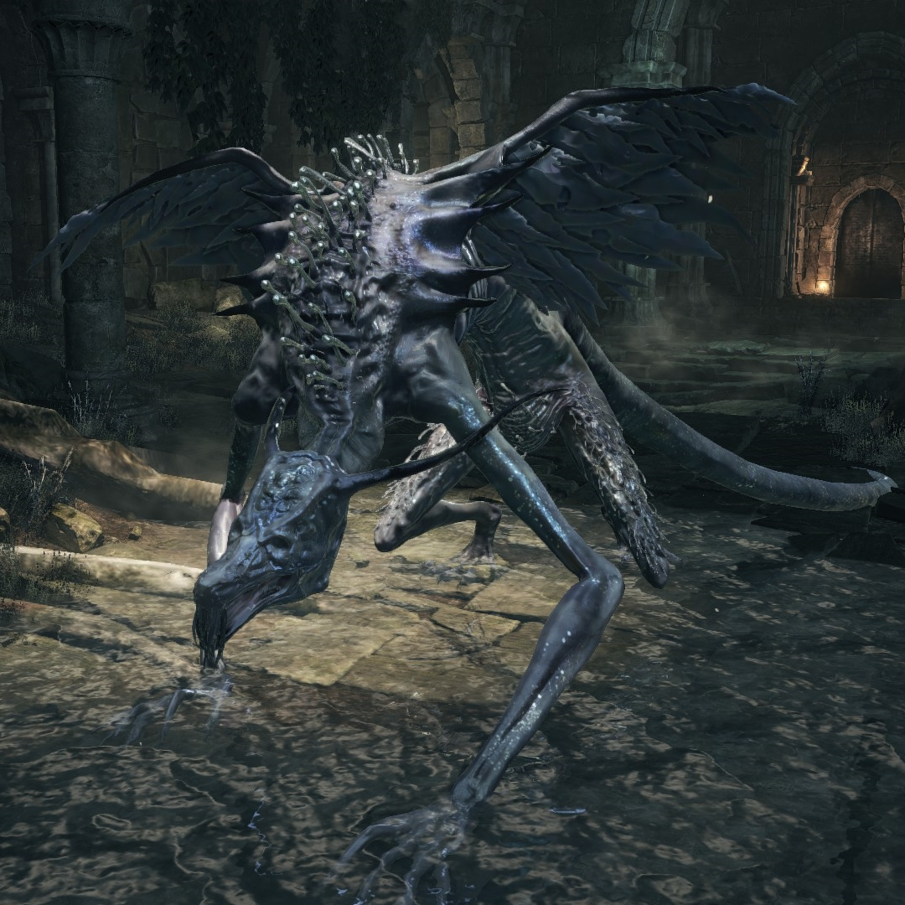

← Volver
← Volver
Oceiros, el Rey Consumido, es un jefe de Dark Souls III. Se puede asumir que es ciego (como Seath, el dragón descamado de Dark Souls) y que sus cuencas oculares están vacías, ya que hace referencias sobre esto a lo largo de la batalla. Es un jefe muy vocal y constantemente le habla a un bebé invisible o imaginario al que sostiene en su brazo durante la primer mitad de la contienda. Al comienzo, Oceiros ataca al jugador con su váculo, pero luego de que su barra de salud alcanza un cierto punto, se pone en cuatro patas y comienza a atacar como una bestia salvaje.
"Ah, esclavos ignorantes. Finalmente se dan cuenta, ¿no es cierto? Del poder de mi amado Ocelotte, hijo de dragones. Bien, no voy a entregarlo. Porque él es todo lo que tengo."
Esta batalla de jefe es opcional para el final "Enlace de la Llama"; sin embargo, es mandatorio para alcanzar el final "El Fin de la Llama". Se puede invocar un NPC para ayudarte en la batalla:
¿Dónde se puede encontrar a Oceiros, el Rey Consumido, en Dark Souls III? En el Jardín del Rey Consumido, luego de derrotar a la Bailarina del Valle Boreal, girando a la izquierda al final de la escalera que nos lleva al Castillo de Lothric.
| Playthrough | NG | NG+ | NG++ | NG+3 | NG+4 | NG+5 | NG+6 | NG+7 |
|---|---|---|---|---|---|---|---|---|
| Solo Souls | 58000 | 116000 | 127000 | 130500 | 139200 | ? | ? | 147900 |
Esta es la cantidad de Almas que obtendremos al derrotar a Oceiros en los diferentes playthrough, desde el New Game regular hasta NG+7.
| Playthrough | NG | NG+ | NG++ | NG+3 | NG+4 | NG+5 | NG+6 | NG+7 |
|---|---|---|---|---|---|---|---|---|
| Vida Total | 8.087 | 9.632 | 10.595 | 11.077 | 11.559 | 12.522 | 13.004 | 13.485 |
| Tipo de Daño | Básico | Golpe | Cortante | Empuje | Mágico | Fuego | Rayo | Oscuridad |
| Absorciones | 20% | 18% | 22% | 15% | 50% | 20% | -40% | 22% |

 ↑
↑